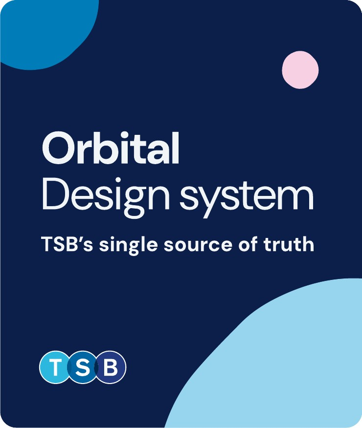
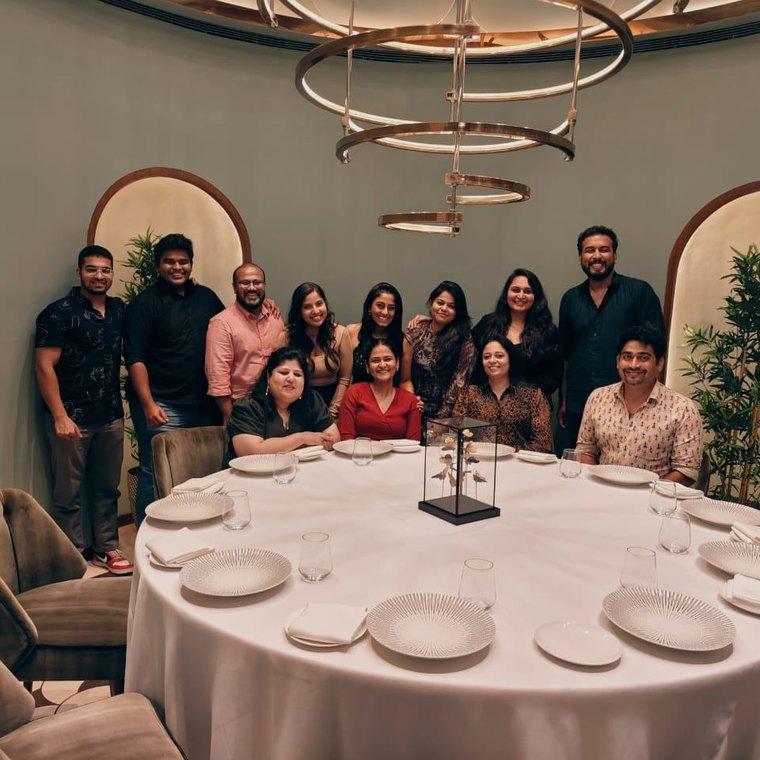
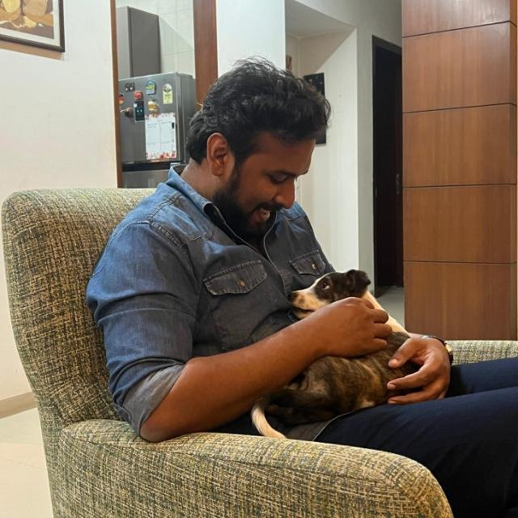
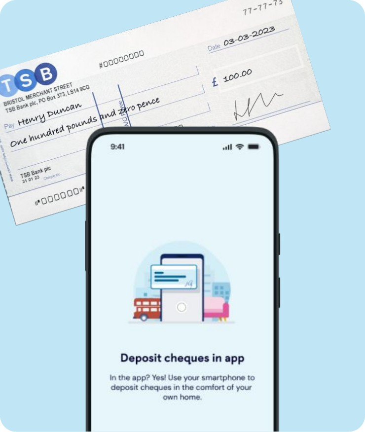
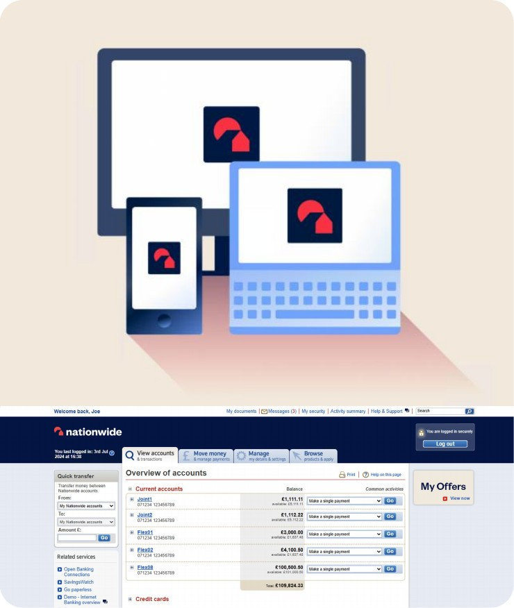

Orbital — building TSB’s design system
TSB Bank · Design system manager
Sketch files, no source of truth, four squads drifting apart. I took Orbital from a component audit to full adoption across the bank.
2021–20247 min read
Hi, I’m James Kurian — designer at IBM, in India
I’m nine years into this, and about five of those have been spent inside banks — which is where I learned that the interesting problem is almost never the one on the screen in front of you. I built and ran the design system behind TSB’s mobile app; these days I’m redesigning internet banking at Nationwide. The work I like best sits in the gap between design and engineering, where the honest answer turns out to be a system rather than a screen.


Designer, occasional team photographer, full-time staff to one cat.
Three pieces of work, written up properly: what the problem was, what I tried, what shipped, and what it moved. All three are client work under NDA, so the write-ups are encrypted — the password unlocks all of them at once.

TSB Bank · Design system manager
Sketch files, no source of truth, four squads drifting apart. I took Orbital from a component audit to full adoption across the bank.
2021–20247 min read

TSB Bank · Product designer
Branch queues for a piece of paper. We shipped camera capture that has taken 100,000 cheques since launch and moved NPS 4.4 points.
2021–20246 min read

Nationwide · Product designer & DSM
A desktop estate at end of service life, drifting from the mobile app. Rebuilding it on the NEL design system, component by component.
2024–ongoing6 min read
You’re opening this case study. It’s client work under NDA, so the write-up is encrypted rather than merely hidden — it decrypts in your browser once the password is right. One unlock covers all three.
Heads up: this page is open from a file rather than a web address, and browsers won’t hand out their decryption API in that situation. Serve the folder over http and it’ll work.